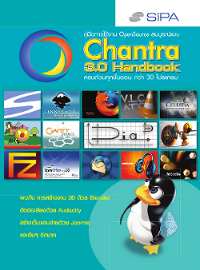

คู่มือการใช้งาน Chantraเนื้อหาภายในเล่มประกอบไปด้วยคำแนะนำ และวิธีการใช้งานซอฟต์แวร์ต่างๆ เหมาะสำหรับผู้ใช้ในระดับเบื้องต้น ครอบคลุมซอฟต์แวร์ในแผ่น Chantra 4 นอกจากนี้คุณยังสามารถดาวน์โหลดคู่มือการใช้งานโปรแกรมเพิ่มเติมได้ที่เว็บไซต์ ThaiOpenSource.Org